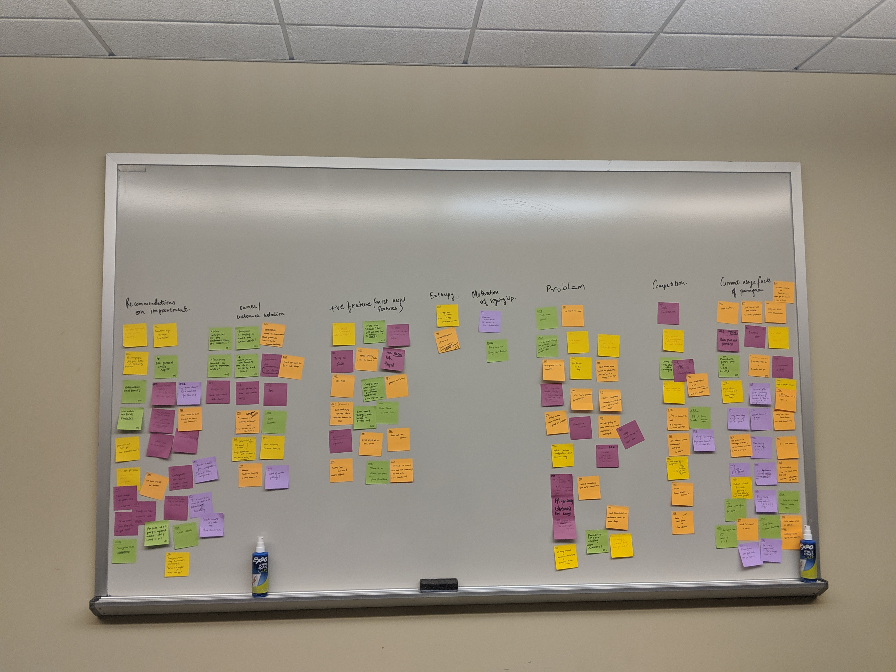
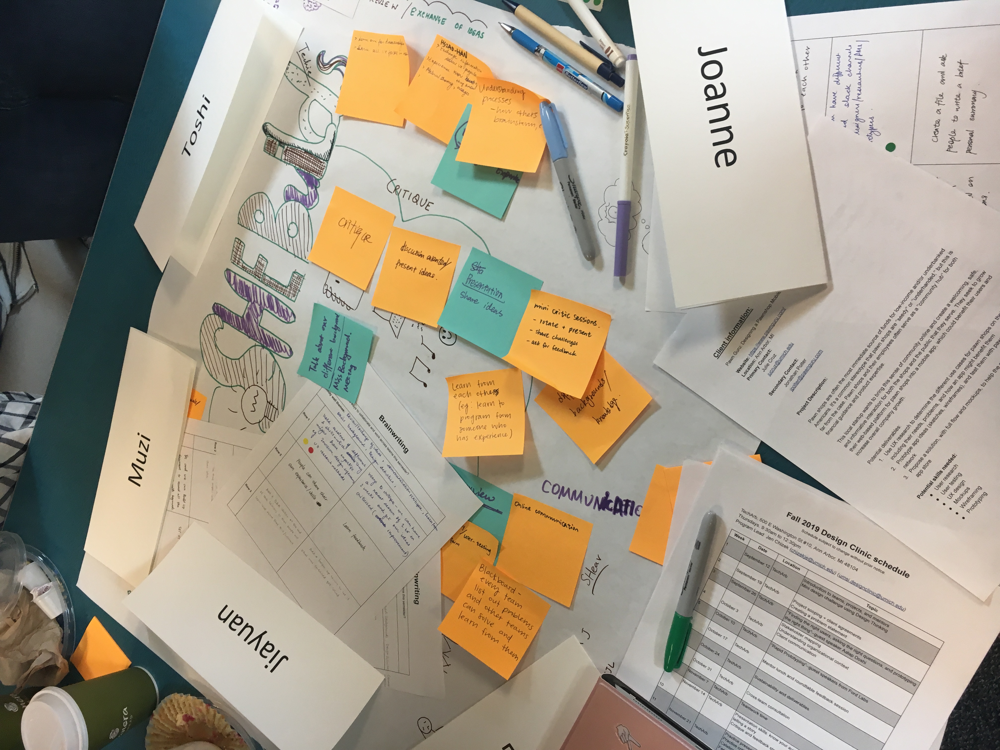

I am participating in UMSI's Design Clinic program this semester, where I am working with four other first-year MSI students to design a mobile application for PawnGuru, a financial tech start-up company based in Detroit. PawnGuru has revolutionized the pawn shop industry by connecting customers and pawn shops online, allowing customers to receive multiple offers for their items. PawnGuru's next major mission is to bring their business onto the smartphone screen, beginning with the user experience of pawn shop owners using PawnGuru to enhance their business.
Most pawn shops are interruption-driven workplaces with customers bustling in and out of the stores on a daily basis. PawnGuru has expressed interest in developing a mobile app for their pawn shop owners, as pawn shop owners desired to negotiate and keep track of their deals in a more instant manner. Pawn shop owners often do not have the time or the ability to constantly be checking their desktop computers. The owners seek a system that would allow them to browse items and make and close deals in a way that would integrate better into their interruption-driven daily workflow. Our task is to transfer PawnGuru's pawn shop owner-facing platform into a mobile one, while integrating opportunities for improvement to the current website into our mobile app.
After interviewing two pawn shop owners in the metro-Detroit area, we clustered and analyzed our findings. We are currently scheduling more interviews, but we have already identified some prominent pain points and received some great insights into how we could improve PawnGuru's current platform on the pawn shop owners' side.
Working on our affinity wall. Clustering recurring information into themes.
We have now identified five workflows we want to focus on. Our next step is to construct these workflows, comparing the current workflow on the website to the ideal workflow we would want to create for our app. Please stay tuned for my next steps in this project!
Aside from this project, the entire UMSI Design Clinic program meets every week for various team-building activities, instructional sessions, and guest speakers. We also have a mentor who provides us with assistance along the way. I'm learning so much through this program!
Team building and brainstorming
